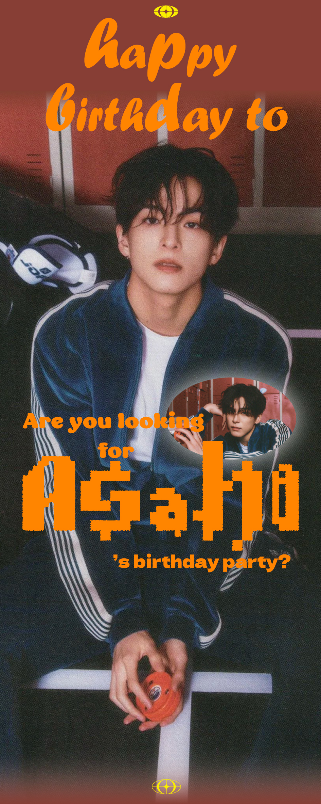
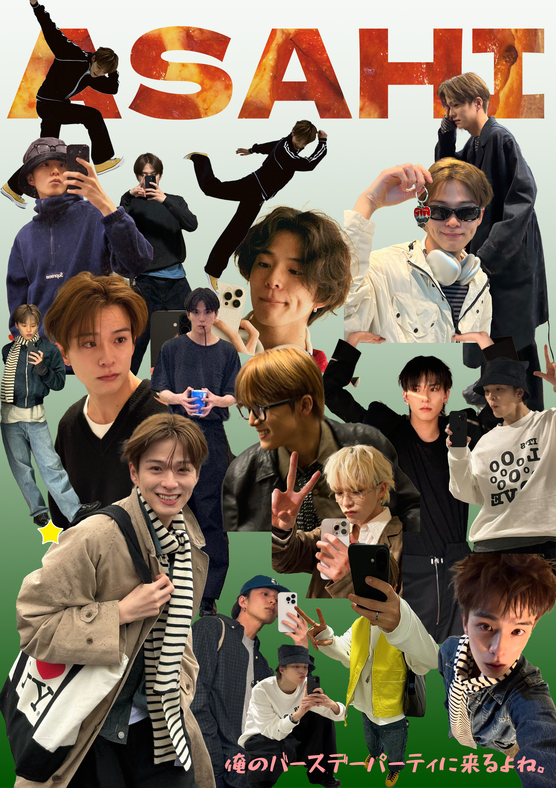
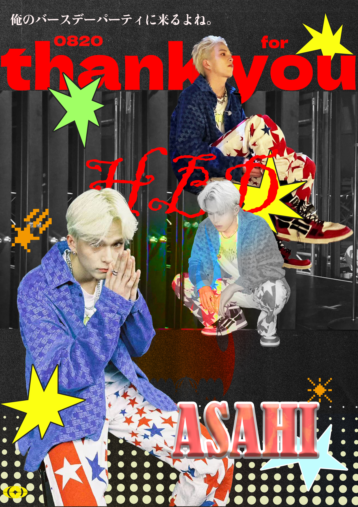
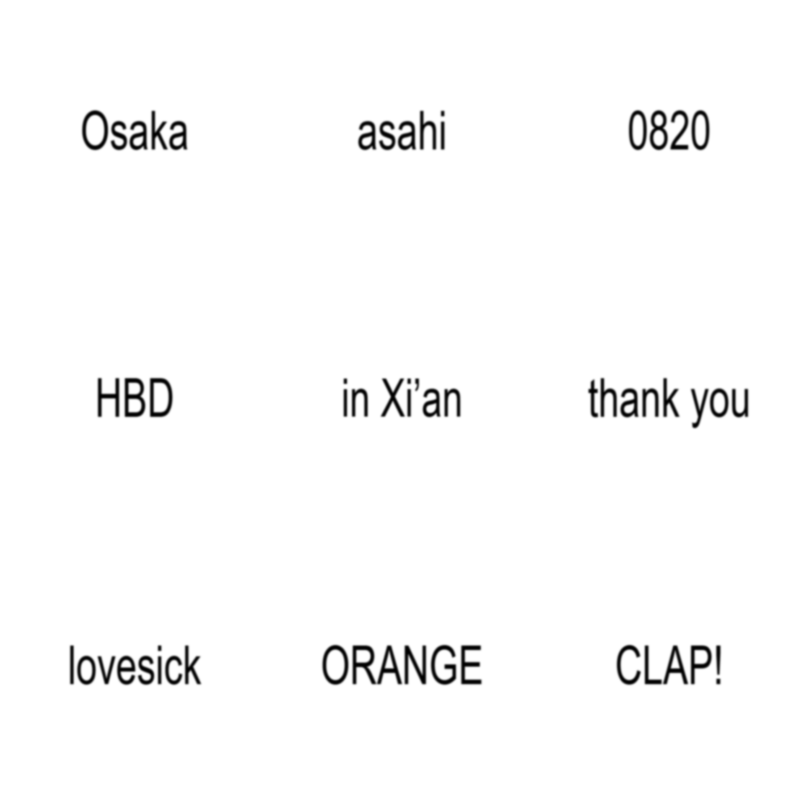
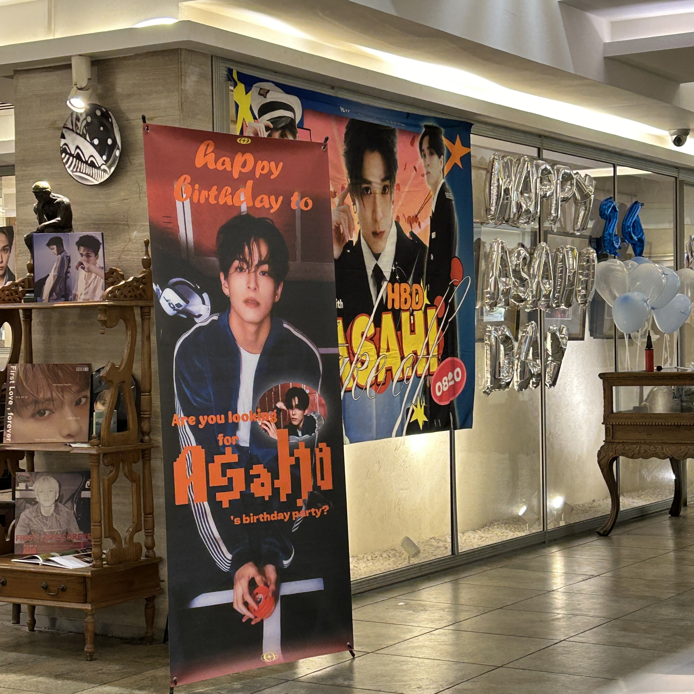
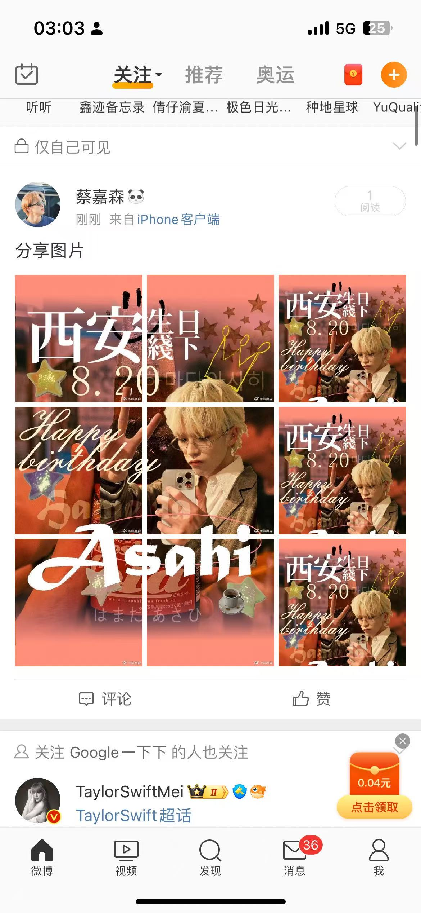
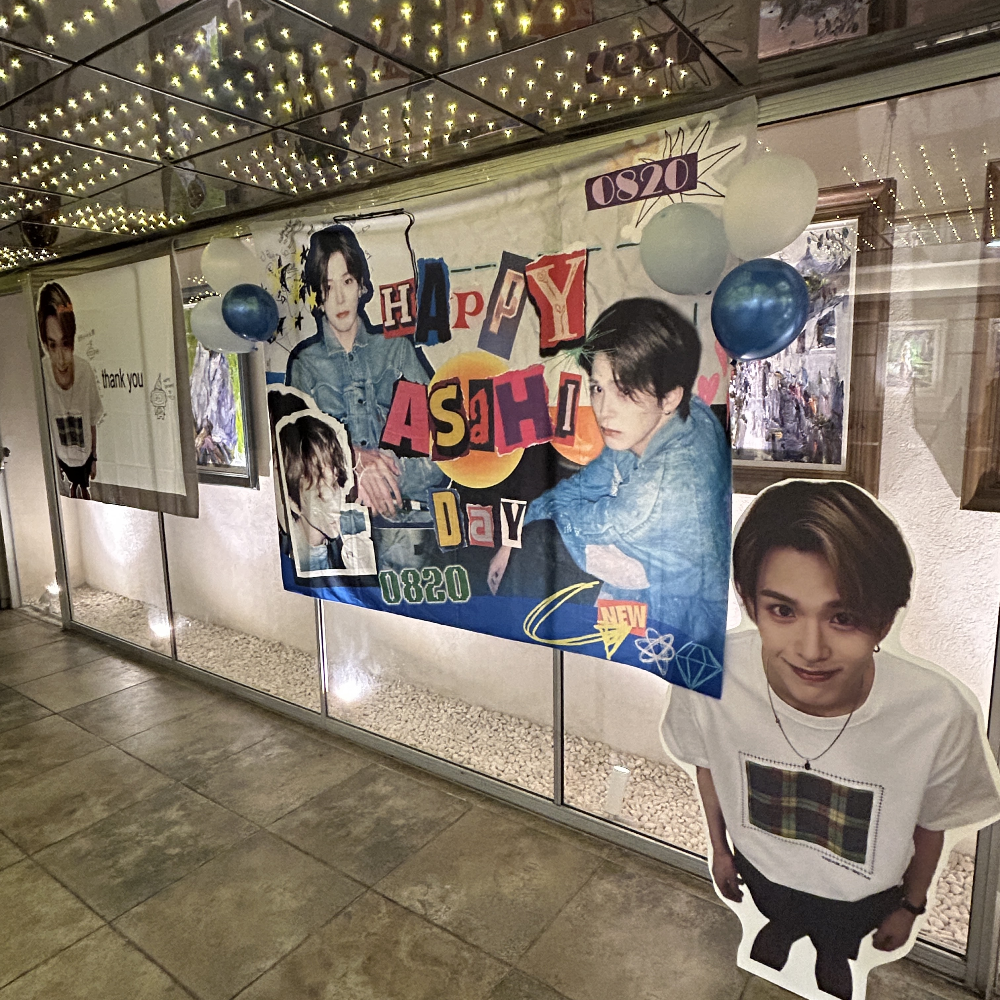
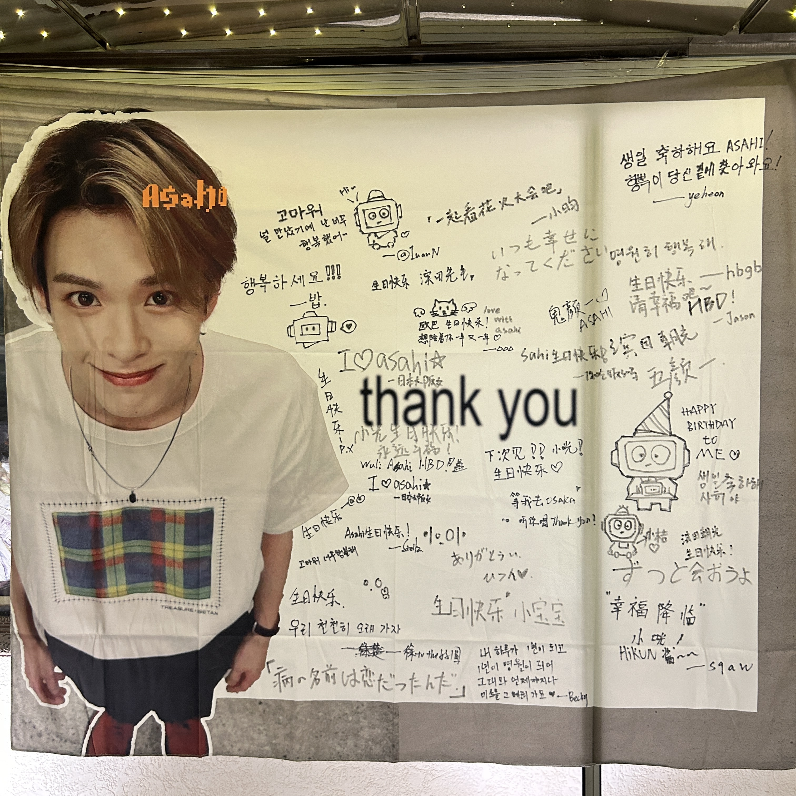

Event Invitation
The main visuals work like invitations, not just birthday cards.
CANDY COINS offline visual case
Idol birthday support visuals for an offline fan gathering.

Project read
Birthday support, stage imagery and Y2K collage turned into posters, roll-up banners and photo-area graphics.
Visual system

The main visuals work like invitations, not just birthday cards.
Wide formats support check-ins, group photos and venue display.
Pixel type, orange accents and sticker stars echo CANDY COINS.
Selected materials
Full exported graphics, kept closer to their original proportions.







Likely contribution
Case angle
The project shows a shift from making a single graphic to designing for a fan community, a room and a photo moment.
